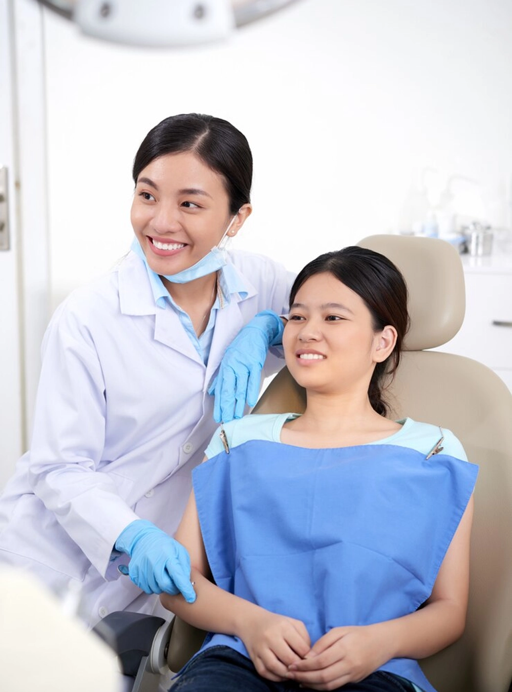
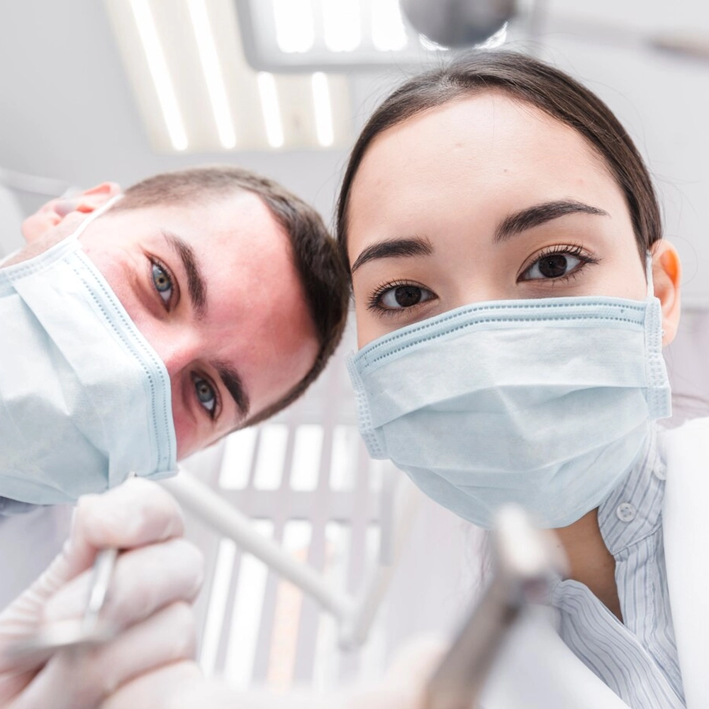
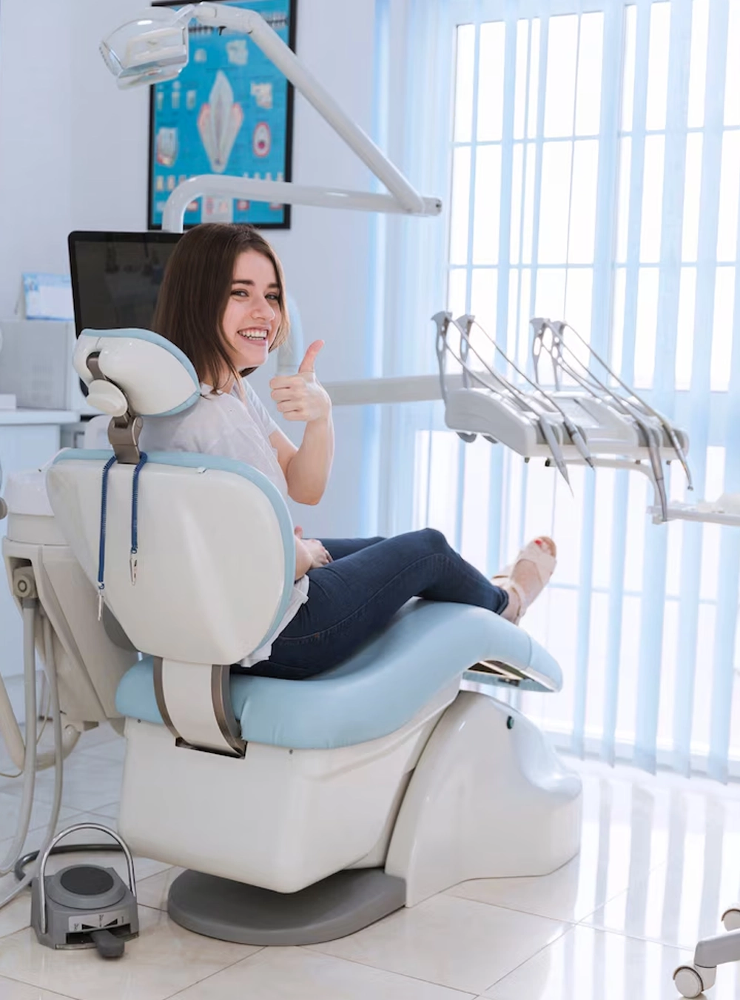

Sorrisos mais bonitos com cuidado especializado e atendimento gentil
Agendar consultaPrecisa de dentista?
Ligue: (11) 99264-4010
Horário de atendimento
Seg. a sáb. 08:00 às 20:00
Fale por e-mail
contato@supporta.com.br


Profissionais experientes e atendimento personalizado
Cuidamos do sorriso de toda a família com qualidade e atenção. Das consultas de rotina aos tratamentos mais avançados, nossa equipe garante um sorriso saudável e cheio de confiança.
- Planos de tratamento personalizados
- Atendimento gentil para crianças e adultos
- Tecnologia de ponta
- Horários flexíveis para agendar
Cuidado completo para cada sorriso
Da limpeza de rotina às restaurações mais complexas, oferecemos soluções personalizadas para pacientes de todas as idades.
Odontopediatria
Atendimento leve e divertido para as crianças crescerem com sorrisos saudáveis.
Saiba mais0+
Pacientes satisfeitos0+
Clareamentos0+
Implantes dentários0+
Anos de experiênciaAtendimento excelente e feito para você
Escolher o dentista certo faz diferença. Unimos cuidado especializado, tecnologia moderna e um ambiente acolhedor para que cada consulta seja confortável, rápida e pensada para você.
Equipe experiente
Atendimento qualificado, com anos de experiência e confiança.
Tecnologia avançada
Equipamentos modernos para tratamentos precisos e eficientes.
Tratamento personalizado
Planos sob medida para o seu sorriso e a sua rotina.
Para toda a família
Espaço acolhedor para crianças, jovens, adultos e idosos.



Dedicados ao seu sorriso
Nossa equipe experiente está aqui para tornar cada consulta tranquila e personalizada, com mãos leves e muito cuidado.

Dra. Camila Andrade
Dentista responsável
Dra. Juliana Prado
Dentista estética

Dr. Rafael Moreira
Odontopediatra
Dr. Lucas Ferreira
Técnico em saúde bucal
Perguntas frequentes
Pacientes satisfeitos
Junte-se a milhares de pacientes que confiam no nosso cuidado gentil e especializado. Sua melhor experiência no dentista começa aqui!
Marcos S.Paciente"Sempre tive medo de dentista, mas a equipe me deixou totalmente à vontade. O cuidado e a atenção aos detalhes fazem toda a diferença."
Roberto L.Paciente"Minha família e eu somos pacientes há anos. O atendimento é excelente e a equipe sempre faz além do esperado para nos deixar bem cuidados."
 Pedro M.Paciente
Pedro M.Paciente"Fui fazer clareamento e saí com outra confiança. O resultado ficou incrível e a equipe deixou tudo muito tranquilo."
Ana P.Paciente"São profissionais, simpáticos e se importam de verdade com a sua saúde bucal. Confio totalmente e indico para quem procura um bom atendimento."